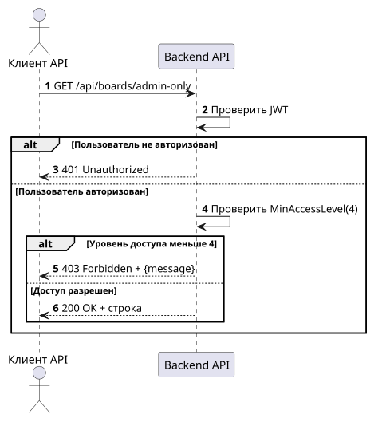

Проверяет наличие у пользователя минимального уровня доступа 4. Маршрут является сервисным и не выполняет операций с досками.
Доступ: JWT и Role.AccessLevel >= 4.
Схема работы


Алгоритм
Проверить JWT текущего пользователя.
Проверить уровень доступа через
MinAccessLevel(4). ЗначениеRole.AccessLevelдолжно быть не меньше4.Если уровень доступа недостаточен, вернуть
403.При успешной проверке вернуть
200со строкой «Только для уровня 4».
Входные параметры
Параметры пути, QUERY-параметры и тело запроса отсутствуют.
Ответ
200 OK: возвращает строку «Только для уровня 4».
Тип | Описание |
|---|---|
string | Сообщение об успешной проверке уровня доступа |
Ошибки
Код | Причина | Ответ |
|---|---|---|
401 | Пользователь не авторизован | Ошибка авторизации |
403 | Уровень |
|